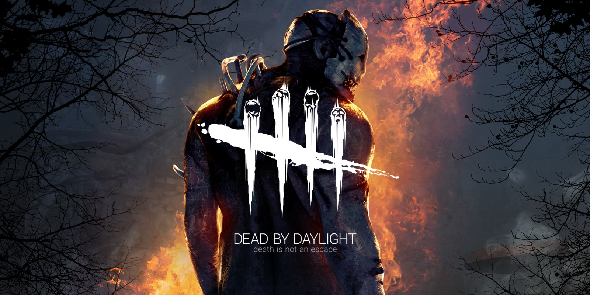

Parsnip's Reel Talk
Dead By Daylight
Have you ever wanted to be the killer in so many of those slasher films, hunting down your victims, toying with them for you own enjoyment? Well Dead by Day light (which I’ll be calling DDL for the rest of this review) is one such game.
DDL pits 4 survivors against one killer, it’ up to the survivors to turn on enough generators to be able to open the exit and escape, while it’s the killer’s job to track down the survivors and put them on hooks for a being just called the entity to kill. Both sides do get perks to help them in their struggles, the survivors get such perks that makes them more efficient in repairing generators when the killer is looking in their rough direction, another perk allows you to heal another survivor faster if you have just recently freed them from a hook.
The killer gets some handy skills of their own, firstly each killer gets their own unique ability, such as with the Silent hill character pyramid head called the executioner in the game , who can plunge his sword into the ground and leave a trail behind him, that when a survivor steps on it the pyramid head can see them for a little bit and also allows him to put that survivor on his own unique hook when pyramid head next downs them. Another killer called The Demogorgon from the show Stranger things, who can make portals to the upside down and lay traps which when sprung will alert the Demogorgon of the survivor who sprung the trap’s location.
As of writing this review there are 21 killers Such as the nightmare (Freddy Kruger) The Shape (Michael Myers) and The Executioner (pyramid head) to name a few, some licensed and some original, and 23 survivors, again some of these survivors are licensed characters such as Ash Williams, Bill Overbeck and Cheryl Mason. So, there is a good chance that you will find a character you like playing for both the killer and survivor side. All but the license characters can be obtained for free by spending in-game currency you get from leveling up a character (which I’ll go in to in the gameplay portion of this review).
There is a in-game store, which you can spend real money to get the premium in-game currency to buy any of the killers or characters, I can see why the company may have done this as someone may want a killer but not the rest of the items that comes with them making it cheaper than buying the DLC pack from somewhere like the steam store, but you can also buy cosmetics for your killers and survivors. None of the cosmetics look very good to me so I’ve not looked into the pricing for these but they’re there. The only plus I can give it is that all the none licensed killers and survivor can be obtained for free from collecting a In-game currency you get from leveling up a killer or survivor, and if you do spend money on the in-game store you at least get what you’re paying for as there are no loot boxes.
Gameplay, I mentioned that you can level up your characters, well after each game regardless of winning or losing you can blood points which you can use to unlock skills and items for each survivor and killer, this is done in a skill tree sord of way but in the later levels some abilities start getting locked off so you can’t get everything from each level, making you have to plan out your path on the skill tree called the blood web in-game. Each character dose starts off with their own unique perks which can later be obtained by any other character in once the perks original user reaches level 30, meaning perks exclusive to a character like bill can be obtained in another survivor’s blood web, this also applies to the killers’ blood webs as well. Another big thin in DDL is that when you play as a survivor you play it in their-person and playing as a killer is in first-person
The main gameplay loop is playing as either a killer hunting survivors or as a survivor hiding from the killer and completing goals. The goal for the survivors is to turn on all the generators and open the exit to escape, and it’s the killer’s mission to prevent this by sabotaging the generators still being worked on and attacking survivors and placing them on hooks. There is another way to win and that’s if all but one survivor dies, then a hatch somewhere on the map will open and this is the same as escaping for the remaining survivor, the killer can close this hatch, but doing so sets on a timer for the survivor and opens all the exits, and if the survivor doesn’t leave before time runs out they instantly die, this timer also appears when one of the exits are opens for by a survivor.
When playing this game, you will occasionally come across some killers that will put you on a hook then wait nearby making sure no survivors can save you, and if one dose it usually results with you getting put back on the hook, and is a survivor is put on a hook three times they are instantly killed, the survivor’s first hook they get the option to try and free themselves but this almost never works and just shortens your life bar which slowly ticks down as you’re on the hook, your second hook, (or if you remain on the hook too long) then you get put into a struggle state which forces you to mash a button to fight off the entity, by not mashing the bar empties faster, and your third hook results in your death. As a survivor you also have three states of health, healthy, injured, and dying state, at the start of a game you’re in the healthy state and being hit once by the killer will give you a speed boost allowing you to get away and puts you in the injured state. When in the injured state your character begins making pained noises and dripping blood which the killer could use to track you, but it’s usually very hard to see the blood on the maps, as both the killer and survivor, also some characters get bonuses to tasks while in the Injured state. Finally, is the dying state, when in the dying state you move very slowly, and cannot do any tasks while also in this state you get the same time bar as if you’re on a hook and the survivor dies if the bar empties while they are I the dying sate, a survivor can also try to heal themselves while in the dying state, but must have a fellow survivor help them finish healing, which will you that survivor into the injured state.
When playing as the killer on my own I had a bit of fun toying with the survivors, as the killer I have not had any problems with randoms on the survivor’s side. There is not really anything bad I can say about the killer I just had so much fun playing killer and toying with the survivors, chasing them around then walking away to chase another survivor. When a survivor tried to loose me by dropping boards on me or by jumping through windows, I could use my ability as the Executioner (pyramid head) I was able to his them with my ranged attack which means that both sides has skills and tools to be used during chases. When it comes to playing with friends as the killer, it’s so fun to just appear and scare your friends, and I always enjoyed toying with my friends as the killer more than I did when I was playing against random people online, and communicating with my friends over the internet, this definitely feels like a game that’s better with friends.
With the Music, there’s almost none other than at the main menu and lobby, but when it comes to the game itself, then there’s almost none, unless the killer is close to a survivor, then both the killer and survivor will start having some typical horror music play, and it keeps playing while the killer is chasing the survivor, it only stops when the killer looses sight of the survivor for a few seconds. This is something I really liked, turning the soundtrack into a gameplay mechanic, for both the killer and survivor. The main thing you’ll be hearing during gameplay is just sounds of objects such as you climbing over obstacles, running, the pained sounds of your character, and the echoing noise of the hatch indicating to the killer and survivor, if they’re close by.
The visuals are very nice for the most part, most of the game is at night, there are some maps that take place at dusk, but most of the time the game takes place at night. On a few of the maps, they usually are very open making it easy for the survivors to see the killer running around, but not so easy that the killer stands out, but clear enough to know where they are.
Over all I do enjoy playing the game, mainly with friends when playing as a survivor, as you know your allies will help you when you’re in trouble, and being able to watching your friends run in terror from the killer off in the distance, allowing me to plan out how I will navigate the map, playing with friends defiantly improves the game, be it all of you playing as survivors against a killer or, doing your own custom games with 4 other friends. You can get a bit of fun out of this game when playing solo but I feel that’s only really when you’re playing killer, when playing as a survivor, you Have a high chance either the killer is going to camp you when you’re on the hook or, none of your allies will come to rescue you. This game dose have it’s moments, mainly when playing with friends, and when playing killer on your own, but I feel that playing this game with friends is what makes this game worth it.


About
I am Parsnip and this is my Review site, where I review Films/TV shows, Gamnes and books. THis site is being run by myself only for now, so new uploads will be slow to come out